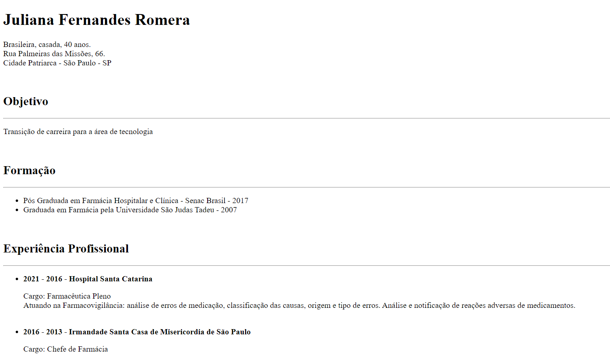

CURRICULO
O exercício proposto para essa atividade foi criar um currículo utilizando somente HTML, e postar no Github como página.

Saiba mais
O exercício proposto para essa atividade foi criar um currículo utilizando somente HTML, e postar no Github como página.
Nessa atividade o desafio foi criar um cardápio simples usando HTML e CSS.
Elaboração de uma página sobre um dos 17 Objetivos de Desenvolvimento Sustentável (ODS). Devendo conter alguns itens obrigatórios como Menu clicável, vídeo e imagens.